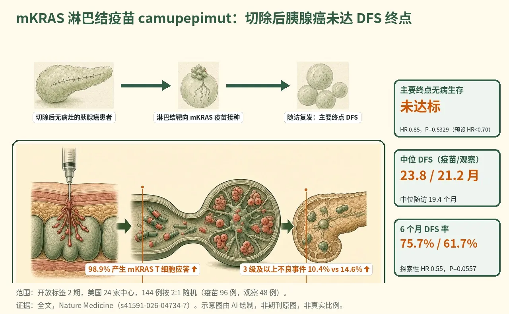

淋巴结靶向KRAS疫苗2期：DFS未达标，免疫信号待验证
AMPLIFY-7P 开放标签随机 2 期试验（144 例，2:1）中，两亲性淋巴结靶向七价突变 KRAS（mKRAS）肽疫苗 camupepimut（ELI-002 7P）用于根治性局部治疗后影像学无复发的 KRAS 突变胰腺导管腺癌，意向治疗人群 DFS 主要终点未达到（中位 23.8 对 21.2 个月，HR 0.85，P = 0.5329）；给药期 6 个月 DFS 率 75.7% 对 61.7%（HR 0.55，P = 0.0557）。预设亚组（ctDNA 阴性、既往未放疗）与事后多因素校正（HR 0.47）提示获益信号；98.9% 的可评估患者诱导出 mKRAS 特异性 T 细胞，应答超过基线 9.17 倍者 DFS 明显更优（HR 0.22）；既往放疗与淋巴细胞减少及较弱 T 细胞应答相关。≥3 级不良事件 10.4% 对 14.6%。

- 七种 mKRAS 肽与 CpG 佐剂经两亲性修饰后结合白蛋白，经淋巴管富集于淋巴结，被抗原提呈细胞摄取
- 疫苗诱导针对全部七种 mKRAS 变体的 CD4 与 CD8 T 细胞，并出现针对非疫苗新抗原的表位扩展
- ITT 人群 DFS 未达主要终点，曲线早期分离与给药期重合；应答超过基线 9.17 倍者 DFS 更优
- 既往放疗 → 基线淋巴细胞减少 → mKRAS 特异性 T 细胞应答减弱，提示 3 期需排除既往放疗并按 ctDNA 分层
示意图概括了两亲性（AMP）淋巴结靶向递送的原理、camupepimut 诱导的多价 mKRAS 特异性 T 细胞应答、AMPLIFY-7P 的阴性主要终点与早期分离信号，以及作者据此提出的“放疗—淋巴细胞减少—免疫应答减弱”与 ctDNA 分层的 3 期设计思路。
研究背景与待解问题
胰腺导管腺癌（PDAC）在美国每年约有 67,000 例新发、53,000 例死亡，手术是唯一根治手段，但术后局部与肝脏复发倾向高，5 年生存仅 15%–17.4%；免疫检查点阻断在 PDAC 基本无效。KRAS 突变是截干性驱动突变，见于约 90%–95% 的 PDAC，且正常组织不表达，是理想的“公共新抗原”。然而既往路线各有短板：G12D 限制性 TCR-T 细胞治疗受 HLA 限制、操作复杂；联合双检查点的未修饰长肽 KRAS 疫苗对最常见的 G12D 应答有限；个体化 mRNA 新抗原疫苗中包含 mKRAS 抗原的 13 例患者仅 1 例诱导出 mKRAS 特异性 T 细胞。
两亲性（AMP）策略将抗原与佐剂连接到白蛋白结合脂质上，使其经淋巴管富集于淋巴结。前代二价产品 ELI-002 2P 的 1 期研究（20 例 PDAC、5 例结直肠癌，影像学无病但 MRD 阳性）中 84.0% 的患者出现 mKRAS 特异性 T 细胞应答，并以 ROC 分析确定 9.17 倍应答阈值；高于阈值者中位 RFS 未达到对 3.02 个月（HR 0.12）。七价 camupepimut 旨在扩大可入组人群。本研究要回答的核心问题是：在随机对照条件下，这种现货型（off-the-shelf）mKRAS 疫苗能否在术后辅助阶段延缓复发，以及 1 期观察到的“免疫应答幅度—临床结局”关联能否重现。
研究设计
AMPLIFY-7P 为开放标签随机 2 期试验。入组者为 ≥18 岁、ECOG 0–1、病理确诊、携带疫苗覆盖的七种 KRAS 突变之一、可切除或交界可切除 I–III 期（AJCC 第 8 版）PDAC，已完成 NCCN 标准化疗/放化疗并经 R0 或 R1 切除，局部治疗结束后 6 个月内影像学无病（NED）。ctDNA 阳性和/或 CA19-9、CEA 升高（即 MRD 阳性）与否均可入组——需要指出，这并非一项只纳入 MRD 阳性者的试验，基线 MRD 阳性者占全体 60.4%。既往接受过免疫检查点抑制剂或肿瘤疫苗、淋巴细胞 <1.0 × 10⁹/L 或胚系 BRCA1/2 突变者被排除。
患者按淋巴结状态分层、2:1 随机接受 camupepimut 或观察。主要终点为研究者按 iRECIST 评估的 DFS。按 HR 0.53、双侧 α 0.10、80% 把握度估算约需 71 个 DFS 事件；成功阈值预设为 HR < 0.70、P < ~0.10。预设亚组包括年龄、性别、ECOG、淋巴结状态、切缘、既往放疗、既往脾切除、G12D/G12V/G12R、ctDNA 与 MRD 状态。免疫原性以离体 IFNγ/颗粒酶 B Fluorospot 与胞内细胞因子染色（ICS）评估；“应答者”定义为任一接种后时间点较基线 ≥2 倍升高且超过检测阈值。另以全外显子测序选取每例至多 10 个非疫苗新抗原评估表位扩展，并对 89 例做高分辨率 HLA 分型。值得注意的是，方案 6.0 版（2023 年 9 月 13 日）才将主要终点由 RFS 改为 DFS 并加入分层、扩大样本量；统计分析计划 1.0 版于 2025 年 2 月 28 日（入组结束后）批准，2.1 版（2025 年 12 月 31 日）又增补了肿瘤分期、既往系统治疗与 KRAS 突变等亚组。
核心结果
入组与基线：分层平衡了淋巴结状态，但高危因素分布不均
144 例中，疫苗组 96 例全部接受治疗，中位剂量强度 100%（6 次初免 + 4 次加强），完成治疗 72/96（75.0%），观察组完成观察期 30/48（62.5%）。疫苗组中位年龄 65 岁，54.2% 为女性，81.3% 为白人；I、II、III 期分别占 31.3%、42.7% 与 26.0%，全部接受过化疗与胰腺切除，24.0% 接受过放疗。分层因素淋巴结状态平衡（N0 40.6% 对 39.6%），但疫苗组 ctDNA 阳性比例更高（20.8% 对 12.5%）、R1 切除更多（26.0% 对 18.8%），观察组既往放疗更多（31.3% 对 24.0%）；CA19-9 升高两组均为 29.2%。肿瘤 KRAS 突变分布也不同：疫苗组以 G12V（40.6%）居首，G12D 占 38.5%，观察组 G12D 占 56.3%。
主要终点未达到，早期分离与给药期重合
ITT 人群中位 DFS 23.8 对 21.2 个月，HR 0.85（95% CI 0.52–1.41），P = 0.5329，未达到预设的 HR < 0.70 阈值。预设的 6 个月 DFS 率（对应给药期）为 75.7% 对 61.7%，随机至 6 个月的探索性 HR 0.55，P = 0.0557。换言之，两条曲线在疫苗给药期内分开、之后趋于接近，这一形态本身就是对“维持给药”假设的主要依据。
事后多因素校正与预设亚组：信号存在，但统计口径需细读
事后多因素 Cox 回归显示，校正后 camupepimut 相对观察的 HR 为 0.47（95% CI 0.27–0.82，P = 0.0086），而 III 期（校正 HR 2.29）、CA19-9 升高（3.16）与基线 ctDNA 阳性（5.99）是独立不良预后因素。两臂合并分析中，ctDNA 阳性者中位 DFS 仅 4.2 个月，阴性者 24.0 个月（HR 6.56）。
预设亚组中，ctDNA 阴性者（93 例，占 ITT 64.6%）中位 DFS 未达到对 21.2 个月（HR 0.51，P = 0.0280），18 个月无复发或死亡比例 70% 对 56%；ctDNA 阳性者（26 例）为 4.3 对 1.9 个月（HR 0.57，P = 0.0489）。既往未放疗者（106 例，占 73.6%）中位 DFS 23.8 对 10.4 个月（HR 0.59，P = 0.0221），18 个月比例 55% 对 44%。需要细读的是：这些亚组的 HR 95% CI 均跨越 1（ctDNA 阴性 0.25–1.02、ctDNA 阳性 0.22–1.48、未放疗 0.33–1.03），而 P 值来自对早期差异更敏感的 Wilcoxon 检验，且未校正多重比较。此外，ctDNA 阴性亚组内观察组既往放疗比例仍明显更高（38.7% 对 14.5%），两个“获益亚组”存在重叠与相互混杂。
放疗、淋巴细胞与疫苗应答
既往放疗者基线淋巴细胞绝对计数更低（中位 1.2 对 1.7 × 10⁹/L，P < 0.0001），疫苗诱导的 mKRAS 特异性 T 细胞应答也更弱（中位 15 倍对 58 倍，P = 0.0011）；超过 9.17 倍阈值的比例为 61.9% 对 88.4%，比值比 0.21（P = 0.005）。这是本研究最具设计启示的一条“生物学链条”。
免疫原性：广谱、持久且有表位扩展
90 例可评估患者中 89 例（98.9%）诱导出 mKRAS 特异性 T 细胞，较基线中位升高 44.3 倍（范围 2.13–1,310 倍）；85%（68/80）同时激活 CD4 与 CD8 T 细胞，70%（62/89）对全部七种抗原均有应答，87.6%（78/89）对自身肿瘤携带的突变有应答。G12D、G12R、G12V 的平均升高倍数分别为 48.6、51.3 与 31.1 倍，应答率 89%、87% 与 82%——作者据此认为淋巴结靶向可能克服既往未修饰肽疫苗 G12D 免疫原性弱的问题。80.2%（69/86）出现颗粒酶 B 和/或穿孔素升高的细胞毒性应答；≥46 周时仍有 95.5%（63/66）可测到阳性应答。15 例中 13 例（86.7%）出现针对非疫苗新抗原的表位扩展。HLA 分型共识别 1,132 种独特 HLA 分子，未见特定等位基因与应答幅度相关，携带或不携带已知可提呈 mKRAS 肽的 HLA I 类等位基因者 DFS 曲线几乎重合（HR 1.02）。野生型 KRAS 应答少见且水平低。
免疫应答与疗效的关联
疫苗组中 82.2%（74/90）应答超过 9.17 倍，这些患者 DFS 显著更优（HR 0.22，95% CI 0.08–0.63，P < 0.0001），中位 DFS 未达到对 6.08 个月（事件 35.1% 对 81.3%）。以自身肿瘤突变应答的第一四分位数分组（HR 0.31）、Fluorospot 中位数分组（HR 0.48）或 ICS 中位数分组（HR 0.38）结果方向一致，重现了 1 期的“应答幅度—结局”关联。
安全性
疫苗耐受性良好：治疗期出现的不良事件 72.9% 对 77.1%，严重不良事件 6.3% 对 8.3%，≥3 级 10.4% 对 14.6%；5.2% 的患者因不良事件需调整给药（多为推迟给药），无减量、无因不良事件退出或死亡。腹痛（10.4% 对 16.7%）、乏力（10.4% 对 12.5%）等与疾病进展相关的事件在观察组数值上更多。
机制解读
论文所证实的： 在随机对照条件下，camupepimut 在意向治疗人群中未能显著延长 DFS；但它稳定地诱导了高幅度、多价、兼具 CD4/CD8 与细胞毒表型、并在 ≥46 周仍可测到的 mKRAS 特异性 T 细胞应答，且应答不受 HLA 背景限制，安全性与观察组相近。既往放疗与较低的基线淋巴细胞水平及较弱的疫苗应答相关，ctDNA 阳性是强烈的不良预后因素。
作者假设： 作者认为，ctDNA 阳性者在疫苗组过度集中，稀释了疗效识别；校正后 HR 0.47 与亚组信号代表“真实但被不平衡掩盖”的治疗效应。6 个月内的早期获益与给药期重合，被解读为延长或维持给药可能维持获益；表位扩展被视为淋巴结在原位协调旁观者肿瘤特异性 T 细胞的证据。作者还提出与免疫检查点抑制剂或 RAS 抑制剂联合的设想。需要强调：应答幅度与 DFS 的关联只在疫苗组内部比较，存在“应答者偏倚”——早期复发者可能来不及完成接种或产生应答，因而这一关联本身不能证明 T 细胞应答是疗效的原因；校正 HR 属事后分析，表位扩展仅评估 15 例，均为假设生成。
局限与不确定
- 主要终点阴性；样本量中等、开放标签、双侧 α 0.10 设计，DFS 由研究者按 iRECIST 而非 RECIST 判定，可能引入评估偏倚。
- 预设亚组与免疫原性分析均未校正多重比较；亚组 HR 的 95% CI 跨越 1，P 值为 Wilcoxon 检验结果；Methods 称亚组以治疗×亚组交互 P 值报告，但正文与图注中未见交互检验结果。
- 事后多因素 Cox 回归可部分处理基线不平衡（ctDNA 阳性、R1 切除、放疗、G12D 比例），但只能视为假设生成信号。
- 免疫应答与疗效的关联仅限疫苗组，无对照组可比；存在应答者偏倚的可能。
- 中位随访仅 19.4 个月，OS 尚不成熟且允许交叉，未来 OS 解读受限；肿瘤标志物与交叉分析尚未报告。
- 入组以白人为主、黑人患者代表性不足，且仅来自美国有限中心，外推性有限；方案中途更换主要终点，统计分析计划在入组结束后批准并增补亚组。
- 研究由 Elicio Therapeutics 发起、设计并资助，多名作者为其员工并持有股份或相关专利。
临床/产业意义
对临床而言，这是一项阴性的随机 2 期试验，camupepimut 目前不应被视为切除后 PDAC 的有效辅助治疗。但它提供了几条对整个“现货型 KRAS 疫苗”领域都有价值的信息：其一，淋巴结靶向肽疫苗可在绝大多数患者中诱导覆盖 G12D 在内的广谱 mKRAS T 细胞应答，且不受 HLA 限制，这正是个体化或 TCR 疗法难以做到的；其二，ctDNA 状态对术后复发风险的区分能力远强于疫苗效应本身（合并 HR 6.56），未来辅助免疫治疗试验若不按 ctDNA 分层，很容易被基线风险不平衡淹没；其三，放疗相关淋巴细胞减少可能削弱疫苗应答，提示前序治疗选择与免疫治疗之间存在需要前瞻验证的相互作用。作者计划的 3 期将加大疫苗给药、考虑联合免疫检查点抑制剂、按 ctDNA 分层并排除既往放疗者——这些富集策略能否把 2 期的亚组信号转化为确证性获益，是判断该平台价值的关键。